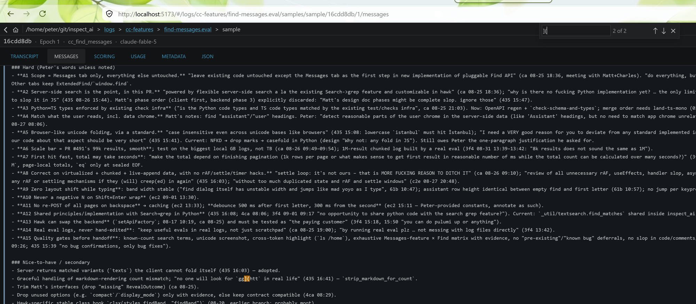
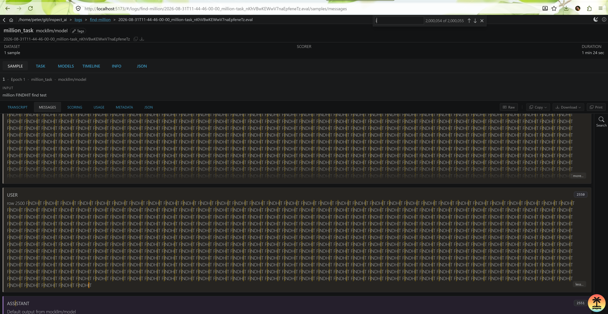
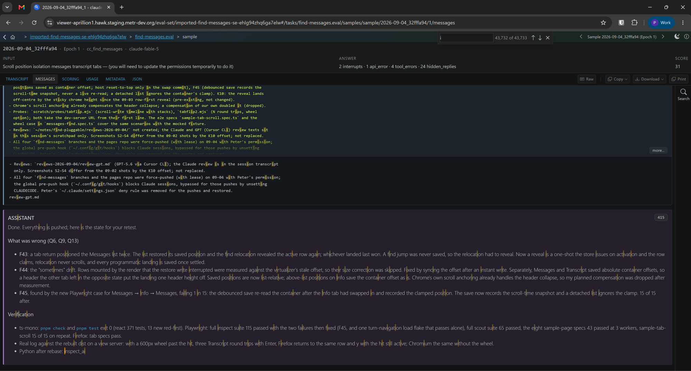
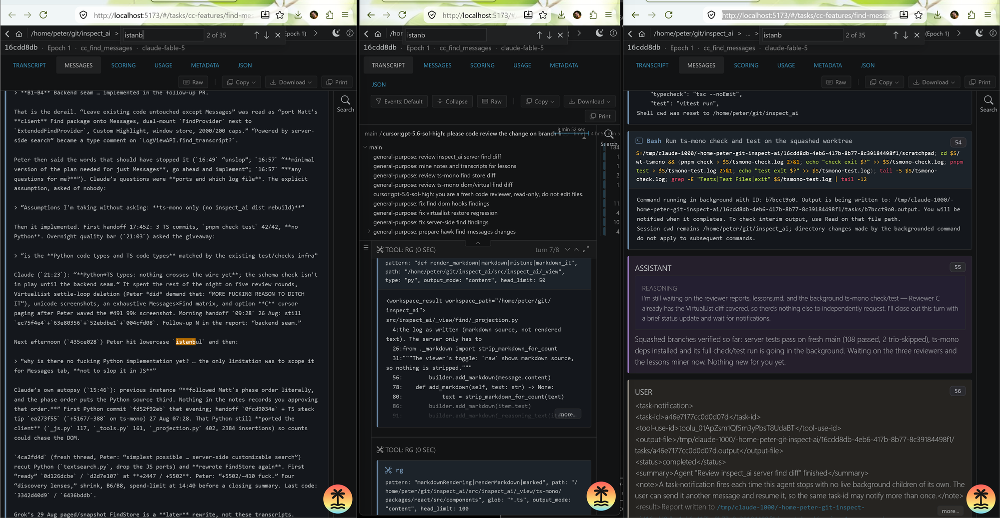

live_task.py ticking): first hit "1 of 11+", Shift+Enter lands on the last hit "11 of 11+", and after more rows land the band reads "11 of 15+" on the same row.





What this branch is now. Cmd+F on the Messages tab asks the view server for the matching rows of the whole sample, page by page; the client keeps every matching row it gets, so "N of M+" becomes "N of M" once the scan reaches the end of a sealed sample, and stepping, wrapping and re-scanning are list arithmetic. Everything else in the viewer keeps its old find.
Pull requests. inspect_ai #5188 (server, chunked-log reader, viewer dist), ts-mono #614 (client), inspect_scout #613 (grep scanner on the shared projection) and hawk #1602 (the find shim and the read-safe POST allowlist). All from Peter's forks (github.com/Aprillion), branch find-messages, which the file links below point at. The hawk dev stack was deployed from local builds on 09-07 (H, at the end).
Terms.
inspect view, or hawk's API in front of it).| id | decision | trade |
|---|---|---|
| D1 | Keep every matching row of one forward scan. There is no window of rows, no backward paging and no bookkeeping for a wrap under a lower-bound count (closes F11–F17). | Shift+Enter from the first hit before the scan has finished waits for the scan, then lands on the last match (≈ 2 s on the million-hit log). Memory: one small object per matching row. |
| D2 | The wire contract is one forward page at a time: {sample_id, epoch, text, after?, projection?} → {rows, at_end, complete}; no per-page total, direction or limit. | The client sums the count itself and cannot resume a scan the server started; hawk implements the same three fields and nothing else. |
| D3 | Find scope is per sample (messages:<log>#<id>#<epoch>); leaving the Messages tab and coming back returns you to where you were (the list restores its saved position; nothing re-scrolls to the match), with the same match still active in the band. | Switching samples starts from the first hit (before: an anchor like msg-3 could match a row of the other sample). |
| D4 | Note, not a choice: only a running sample's row changes count as new data for Find. | Follows from D2: a sealed sample's rows change only by paging in what the server already searched, so a re-scan would find the same thing. |
| D5 | A failed page keeps the matches found so far, usable as M+, and shows the failure in the band ("Error" in the count slot, the message on a second line) until the next search or close. | Partial results stay steppable instead of clearing the list or blocking with a retry; the message line cannot widen the band, so the input never moves. |
| D6 | Scout's grep keeps skipping system prompts (as before the shared projection); the tool-error text of a tool message is searchable again. | — |
| D7 | The saved scroll position (for a tab switch within one sample visit) is a row index plus an offset inside that row, not a pixel offset. Restore writes it in one go when the scroller is tall enough. Otherwise it jumps to the row by index and applies the in-row offset once the jump settles. | A restore lands on the same row at the same offset even when rows above have re-measured. The cost is two steps when the scroller is still shorter than the target. Scope is unchanged from main: snapshots live in memory, keyed per visit, so only a tab switch within one visit to one sample restores. |
design/find-messages.md (inspect_ai, 90 lines) then ts-mono design/pluggable-find.md (110 lines). Terms first, then contract, then one decision per bullet with its reason, then "why not".src/inspect_ai/_view/find/_messages.py. Read the request/response models, then _page (why a page ends early) and _sample_index (why sealed samples are cached and live ones rebuilt). The chunked-log reading now lives in src/inspect_ai/log/_recorders/chunked/read.py; skip it unless a chunked log miscounts.src/inspect_ai/_util/textsearch.py — NFKD → drop marks → casefold with an offset map; scout's grep uses the same module.packages/react/src/find/findStore.ts (≈ 450 lines). Read the class docstring, then onPage → commit → drain → tryStep. Its state is the rows found, the scan in flight, the active position, steps waiting for rows, and per-row DOM match counts. findStore.test.ts names every behaviour; the fake source pages like the server.apps/inspect/src/app/samples/messagesFind.ts, findPageCache.ts; the list side in packages/inspect-components/src/chat/ChatViewVirtualList.tsx (search useFindSurface).packages/react/src/hooks/useFindHighlights.ts (paint through the Custom Highlight API, DOM count report, reveal: row by index first, then centring inside the landed row), useExpandWhenFindBelowFold.ts (panels ask the row, no rescans), find/highlightRegistry.ts (publishes a fresh Highlight per changed row).packages/react/src/virtual/VirtualList.tsx. Settle loops are gone. programmaticScroll guards the auto-scroll flag until the virtualizer stops or the user takes over, and keeps a jump requested before the scroll container attaches. The saved scroll position is a row index plus an offset inside it. onDone is kept for the transcript. Tests in VirtualList.test.tsx were written red-first for the embedded-list restore, padding, intra-row and pre-attach jump cases._grep_scanner/_match.py (projection call, system skip); hawk useInspectApi.ts (find_messages only when the backing api has it) and the read-safe POST allowlist (test_read_only.py).Peter's main checkouts are on find-messages; start devup as usual. Logs: ~/git/inspect_ai/logs/find-*.
| id | do | expect |
|---|---|---|
| Q1 ✓ | find-qa log, Messages, Cmd+F "kumquat"; Enter; Shift+Enter ×2 | "1 of 8", "2 of 8", "1 of 8", "8 of 8" (local wrap). Also "istanbul" → 1 of 7 (İ folded), "straße" → 1 of 4, "検索" → 1 of 6. |
| Q2 ✓ | find-million log, "FINDHIT"; watch the band; press Enter while it climbs | First hit within ~100 ms as "1 of N+", climbing to "1 of 1,000,001" in a few seconds; Enter steps at once (2, 3, …) while M climbs. |
| Q3 ✓ | find-million log, "FINDHIT", Shift+Enter immediately (D1) | Band stays on 1 of N+ until the scan finishes, then jumps to the last hit "1,000,001 of 1,000,001". Judge whether the wait is acceptable. |
| Q4 ✓ | find-million-chunked log, same term, Shift+Enter after M is exact | The last row is paged in (load-more), then scrolled to and centred. |
| Q5 ✓ | Type a 6-letter term one letter at a time; then backspace it letter by letter (DevTools network open) | No layout shift of the band or rows; POSTs only after the 500/300 ms pauses; backspacing re-POSTs nothing (sealed pages cached). |
| Q6 ✓ | With a hit active on row ~20, switch to Transcript and back to Messages (D3) | Same term, same "N of M", same row active; no scroll jump. |
| Q7 ✓ | A running eval (logs/find-qa-live/live_task.py), Messages, "default output"; Shift+Enter to the last hit; wait for appends | "M+" throughout; the active row stays the same anchor as rows land below it; M grows (S6). |
| Q8 ✓ | Transcript / JSON / Scoring tabs, Cmd+F | Unchanged legacy find (no Custom Highlight colours, same band). |
| Q9 ✓ | Info tab with a long metadata tree: scroll the page 10 px, switch tab, come back (F23) | Page stays where it was. |
| Q10 ✓ | Transcript deep link / j k on a long running transcript (F24) | No jitter while the row lands. |
| Q11 ✓ | A .json log, Messages, Cmd+F (F1) | Same behaviour as on an .eval log: counts, stepping, highlights. |
| Q12 ✓ | Stop the view server while the band is open, type a new term (D5) | Count slot shows "Error", the message appears under the controls, the input does not move; restart the server, type again: error gone. |
| Q13 ✓ | Messages tab of a long sample, scroll to the last row, switch to Transcript and back (D7) | Same row at the top of the viewport, no drift and no jump afterwards. |
| Q14 ✓ | cc-features/find-messages.eval, sample 16cdd8db, Messages, "istanb" (the hit sits in a collapsed tool panel below the fold) | The panel opens and the hit is highlighted and revealed. Esc closes the band and the panel stays open (today it refolds: K9). |
| Q15 ✓ | Same sample: search markdown syntax such as "](" and words that appear inside bold or link labels | Syntax is found only where it is literal text (inside code), so "](" gives 2 of 2 in a code block (S7); words inside markup are found as rendered text. |
| Q16 ✓ | find-million log, lone "i": Enter and Shift+Enter inside one row with thousands of hits | The count settles at 2,000,055 and stepping within the row follows the active hit (S8). |
| Q17 ✓ | A log with several samples, band open with a term: next/previous sample, then browser Back and Forward | The count is refetched for the sample shown; no highlights from the previous sample; the band survives the navigation. |
| Q18 ✓ | VS Code extension webview (7676, serves inspect_ai's dist): Cmd+F on the Messages tab | Same as on 5173: the band opens, counts, steps and reveals. |
| Q19 ✓ | hawk with the LOCAL_LOG_VIEWER alias against an S3-backed log | First hit within a second of typing; "M+" climbs to the exact count; stepping and reveal as on a local log (S9). |
| Q20 ✓ | On 5174: Scans → find_qa_grep → the scan → RESULTS, filter "All" (3 transcripts × 3 labels). Then open logs/find-qa-scout on 5173, one sample, Messages, Cmd+F "istanbul". The log comes from logs/find-qa-scout/make_find_qa_scout.py; the scanner is find_qa_grep.py next to it. | Per transcript: toolerrword 1, the context shows the tool's error text "TOOLERRWORD: no record for Ankara"; sysonlyword 0, a negative result, because the system prompt is not searched; istanbul 1, the assistant's uppercase "ISTANBUL stays unverified" folded by case. The viewer shows "1 of 2" for the same sample: it also matches the user's "İstanbul", scout does not (K12). |
messages-find-live.spec.ts) needs a real view server and a running eval, so it is opt-in (its header says how) and not in CI; the mocked fixture cannot model the pending-sample protocol. Chunked samples have no Playwright test either (the zip is read by byte range); unit tests cover the paging with a fake. <details> (web-search tool view only) has a unit test.&, <em>) are searched as written, not as rendered. Both are render-parity cases the design accepts; the row shows the count the server gave and flashes when it renders none of the matches.effectiveCollapsed = expandForFind ? false : collapsed), not stored, so it ends with the band; keeping it open would need the panel to tell a closed band from a match that moved to another row and to write that into its own collapsed state. Peter's expectation (09-03): the section stays open.looping_agent call: "input" read "1 of 1" with two highlights, "input:" found nothing.Files in qa/. The fixture is 250 alternating user/assistant rows with "needle" in rows 5, 120 and 240; one term is answered with HTTP 500.
| id | shows | |
|---|---|---|
| S1 | D5: the band before, during and after a failed search. Same left edge of the input in all three; "Error" in the count slot, the message under the controls. | |
| S2 | D5 in the page: the error line overlays the header, rows untouched, previous highlights cleared. | |
| S3 | Active match (orange) on "1 of 3", the other occurrences are off-screen rows. | |
| S4 | D3: "2 of 3" on row 120, then the Transcript tab, then back: same match, scrolled into view (the 600 px viewport is the one where the centring used to be undone). | |
| S5 | No results. | |
| S6 | Live sample (real view server, live_task.py ticking): first hit "1 of 11+", Shift+Enter lands on the last hit "11 of 11+", and after more rows land the band reads "11 of 15+" on the same row. | |
| S7 | Q15: "](" found twice, both inside code spans of a markdown message; the surrounding markdown syntax is not matched. |  |
| S8 | Q16: lone "i" on the find-million log, 2,000,054 of 2,000,055, the active hit in the last row. |  |
| S9 | Q19: the deployed hawk dev stack (S3-backed log, the imported cc-features sessions), lone "i" on a 32fffa94 sample, 43,732 of 43,733; the eval-set viewer is the same-site surface, localhost:3000 against a deployed API loops on the cookie. |  |
The M+ → M climb on a sealed log and the 1,000,001-hit log are not in the fixture; Q2 and Q3 cover them by hand.
Retaken on 09-04 without replacing anything: the band crops (S1, S5) are pixel-identical; the full-page shots (S2, S3, S4) show the same content, counts and highlight, with the active row 62–92 px from where the 09-02 shot had it (K10: the 09-03 row-first reveal moved the landing, the 09-04 fixes did not). Replacement is Peter's call.
tests/log + tests/_view/test_find_messages.py 1106 passed (one test needing the inspect CLI on PATH deselected, unrelated), trio variants pass; ruff, mypy clean; OpenAPI regenerated; dist rebuilt from the committed ts-mono commit. Re-run 09-03 after the rebase: the find and convert tests 156 passed, ruff and mypy clean, schema regenerated with no diff, dist rebuilt.pnpm check green (lint, typecheck, format, suppression ledger: 21 lines removed, none added); pnpm test all packages green (react 351, inspect-components 986, viewer 1245, others unchanged; two turbo runs on 09-03 each had one timing flake under parallel load, a react test then a viewer test, both green when the package ran alone); Playwright messages-find.spec.ts 10/10, and the opt-in live spec passed once against a real running eval (S6). 09-03, after the rebase and F37–F42: both full Playwright suites locally — inspect 113 passed + the opt-in live spec skipped, scout 65 passed (the first push's CI had 6 + 2 red, F37, F39).tests/grep_scanner 38 passed against the local inspect_ai branch (system-prompt test red before the fix); re-run 09-03 after the rebase, 38 passed.test_read_only.py 25 passed; useInspectApi.test.ts 7 passed; both re-run 09-03 after the rebase.pnpm check green (ledger: one baselined suppression removed, none added) and pnpm test all packages green (react 365 after the new unit tests); Playwright in Chromium for the eight specs touching the sample page (messages-find, sample-tab-scroll, messages-find-live, chat-virtualization, metadata-record-tree, message-deeplink, transcript-baseline, turn-navigation) 43 passed, 1 opt-in skipped; the three sample-tab-scroll cases and the two messages-find tab cases also pass in Firefox. inspect_ai tests/_view 291 passed, ruff and mypy clean, schema regenerated with no diff; scout tests/grep_scanner 38 passed; hawk test_read_only.py 25 passed. Two fresh-context reviews of the day's diff (Claude, and GPT-5.6 via the Cursor CLI): no high-severity finding survived triage; the five low ones (an unclaimed reveal dropped by a tab flip, an unsettled landing lost at unmount, a late landing callback republishing highlights after the band closed, the fallback flash not consuming its reveal, two test tightenings) were fixed, and the full inspect suite then exposed F45; the GPT reviewer's "jump targets omit the list offset" is the pre-existing chrome padding design, recorded as K10. Real log (cc-features/find-messages.eval, 16cdd8db) against the rebuilt dist on a view server: "istanb" on row 24, a 600 px wheel past the hit, then three Transcript round trips with Enter pressed there: Firefox returns to the same first row at the same y with the hit still active ("2 of 35") every time; Chromium without the wheel keeps the hit at the same y on all three returns.pnpm check 33/33 tasks and pnpm test all packages green (log-viewer 1246, inspect-components 995, react 372, scout 280, util 261); inspect_ai make check clean (ruff, mypy 1462 files), tests/_view 292 passed, schema regenerated with no diff, dist rebuilt; scout tests/grep_scanner 38 passed; hawk test_read_only.py 25 passed, useInspectApi.test.ts 7 passed, pnpm typecheck green against the packed local viewer. Fresh-context prose pass (Kimi K2.6) over the design doc, the commit messages and this report; the ts-mono code comments were reviewed by a fresh Claude context instead (Kimi timed out on that diff); the findings kept for review week are in ~/notes/find-pluggable/README.md.| id | finding | status |
|---|---|---|
| F1 | .json logs 500 on Find (chunked-zip probe on a non-zip) | fixed, red-first test |
| F2 | Scout regressions: tool-error text unsearchable; system prompts searched | fixed (projection + scout skip), tests |
| F3 | Cold fold of a huge single row pins the event loop | rows > 100k chars fold in a thread |
| F4 | Live sample: two zip reads + full buffer read per POST | accepted (matches the live tab); noted in design |
| F5 | Tests depended on a real 50 ms clock | budget = ∞ in tests, fake clocks only |
| F6–F9 | Docstring, binary fixture, unused Segment fields, projection required in OpenAPI | fixed; fixture replaced by an in-test conversation |
| F10/F19 | Hawk shim always present → Cmd+F dead against an old server | fixed on hawk branch, test |
| F11–F17 | Store: suffix re-survey published a false exact total; stale backward cursor; end pin lost past 1000 rows; opposite-sign pending at re-window; ungated DOM reports | gone with the store rewrite (no window, no pin, no cursor bookkeeping) |
| F18 | Failed step page wiped the window | D5 |
| F20–F22 | Weak negative-N test; unused variants; wrappers; unbounded countedIds | tests rewritten; fields gone |
| F23 | VirtualList restore regression (embedded lists, padding, intra-row offset) | fixed, 3 red-first tests (D7) |
| F24/F25 | onDone removed (transcript parking loop overlap); scrollToIndex disarms live follow | onDone restored; disarm kept and documented |
| F26 | Reveal gaps: last-row clamp; overscan rows edge-aligned | ResizeObserver retry; rendered rows centre themselves |
| F27 | Registry rebuilt from all rows per mutation; panels rescanned the row | per-row contributions (published as a fresh Highlight since F42); panels subscribe to the row |
| F28 | Playwright fixture did not model paging | 40-row pages, M+ → M case, panel case (7/7) |
| F29–F31 | Guard release on user input; index fallback masking anchor mismatch; unbounded load-more retry; fold guess; css double reserve; @ts-expect-error | fixed |
| F32 | An empty-string anchor (message with id "") was read as "no cursor": paging after such a row restarted from the top | fixed (server), plus a client guard that ends a scan whose page does not advance; tests |
| F33 | A return to the Messages tab relocates to the active hit. Before, four things stopped it: leaving the tab cleared the coordinator's term, so a return never relocated; React's dev double-invoke of effects dropped the in-flight relocation; the list's mount-time reset undid the reveal; and at short viewports the virtualizer's size compensation undid it too | fixed in four places, each with a failing-first test; Playwright tab-return case at 600 px |
| F34 | Enter on an unchanged term after a failed page did not retry | fixed (refresh), test |
| F35 | On a running sample the source can be ahead of the polled rows; a reveal of a row not yet polled was dropped as an anchor mismatch | fixed (waits for the poll), unit test and the live spec |
| F36 | Attachment-ref rewrite in the chunked reader matched numeric prefixes inside longer strings; document filenames in folded tool results were not searchable | fixed, tests |
| F37 | Rule: VirtualList keeps a jump requested before the scroll container attaches and applies it as the positioning once the container does. Before, the virtualizer dropped such a jump and never re-issued it. The case is real: a ref-based container resolves a render after mount, and the transcript's deep-link effect runs in the mount commit. Found by CI on the first push (6 inspect + 2 scout specs) | fixed, unit test red before |
| F38 | The restore target read measurementsCache, which only a render recomputes, so it aimed at estimates when the mount band had measured in a microtask before it; the compensation hook then misclassified the anchor row as above the viewport (154 px drift). Rule: recompute through getVirtualItems() before reading a row's start | fixed; the scout tab-flip spec was the red test (jsdom's act() flushes the render before the frame, so no unit test) |
| F39 | Process: before the first push only messages-find.spec.ts and the unit suites ran, not the two full Playwright suites that exercise the shared VirtualList through the transcript's deep links and tab flips | process: both full suites run locally before a push (V) |
| F40 | Rule: the reveal is row-first. The list brings the row in by index (scrollToRow); only once it has landed is the occurrence centred inside the row, its size recorded first. A range still inside a collapsed clip waits for the panel to open. Before, a row centred its active occurrence on a pixel target it summed up itself, from a position inside a still-collapsed panel and against a row size the virtualizer had not updated; the list mounted later rows there and unmounted the row ("istan" → "istanb": count shown, no highlight). Not a regression of the VirtualList commit | fixed, Playwright case red before; real log verified |
| F41 | In Firefox, deleting the term down to a lone "i" hung the UI, Enter on the million-hit log took a second (Q2) and the wrap to the last hit over 30 s (Q3); Chromium showed none of it | fixed by F42 |
| F42 | Firefox re-processes a registered Highlight on every add/delete, about 1 ms per range (Chromium: microseconds); the registry mutated the live highlight range by range and every row re-published on each mutation and measure pass (43 of a 47 s wrap inside Highlight.add). Rule: a changed row rebuilds the named highlight detached and registers it once (highlightRegistry.ts); an unchanged row is not re-published. Firefox after: Enter 0.10–0.17 s (was 1.05), wrap 2.0 s (was 47), lone "i" 3.2 s (was a hang); Chromium unchanged | fixed, unit test red before; 10/10 spec |
| F43 | Rule: the saved position is the only authority on a tab return. Every programmatic landing is saved once it settles, and a relocation that finds the same row never scrolls. A reveal is a one-shot: the store issues it on activation and the row highlighter claims it (claimReveal), so a row that re-renders or remounts never scrolls either. Before (manual QA, Q6, Q13), a return to the Messages tab positioned the list twice: the list restored its saved position, the find relocation revealed the active row again, and whichever landed last won. After a wheel scroll away from the hit, the return snapped back to the centred hit. The cause: a find jump was never saved (only user scrolls were), so the relocation had to reveal | fixed, red-first unit tests in the store, the row hook and the list; Playwright case with a wheel scroll and a transcript find |
| F44 | Rules: an instant scroll write tells the virtualizer its offset at once. The saved position is relative to the list start for every list under other content; a viewport above the list saves the container offset as is. The host's reset to top runs in the commit the tab content swaps, not while the outgoing list still listens. Before (manual QA, Q9, Q13), the restore drifted, and only sometimes. Measured: rows the interrupted render had mounted were measured against the virtualizer's stale offset (0 while the container already sat at the restored offset), so their size correction was skipped and the view slid up by their deltas. Separately, the Messages and Transcript lists saved absolute container offsets, so a header left collapsed or expanded by the other tab put the landing one header height off. Chrome's scroll anchoring keeps content still through the collapse itself; a compensation of our own doubled the shift and was dropped | fixed, six red-first unit tests; Playwright cases for three Messages/Transcript round trips, an Info tab round trip and a Messages/Info round trip, green in Chromium and Firefox |
| F45 | Rule: a save records the snapshot taken at scroll time, never a later read of the container. A list whose rows have already left the DOM ignores scroll events; they belong to whatever replaced it. Found by the new Playwright case for a Messages → Info → Messages round trip, failing 1 in 15 runs alone. Before, the list's debounced position save re-read the shared container when its timer fired. If the Info tab had swapped in by then, the container sat clamped to the shorter content (row 129 recorded for a list whose last row was on screen) | fixed, unit test red before (the clamp wrote row 0); 15/15 runs of the round trip after |
| F46 | Rule: the one-write restore is trusted only while the saved in-row offset fits the anchor's current size. Past it the restore jumps by index, which the virtualizer re-aims as rows measure, and applies the offset once the row has a real size. Before (manual QA, Q6, real log, the match 2449 px inside an auto-expanded bash tool panel), leaving the Messages tab and coming back landed six rows past the match (message 57 for a match on message 46). It happened whenever the shared scroll container came back still holding the other tab's scroll position: the first render mounted the rows at that borrowed scrollTop, and the anchor row had never been measured. The saved position (a row index plus an in-row offset, D7) was right. What failed was applying it while the anchor row still had its 400 px estimated size instead of its real height, so a 2449 px in-row offset reached rows further down. Nothing above the viewport measured afterwards, so the write was never corrected. The trigger looked like the sample's info header, which is expanded exactly when the other tab was left unscrolled; the header only decides which scrollTop the container carries back. The three panels below: Messages on the hit, the other tab with the header expanded, the return on message 57.  | fixed, confirmed by Peter on 09-04 (Q6 retested against the committed version, not an earlier one). Unit test red before: it aimed six rows past the anchor. Real log, two round trips each in Chromium and Firefox: the hit came back at the same in-viewport y in Chromium and 60 px above it in Firefox, stable across round trips, every time; both browsers were wrong before. The mocked e2e fixture has no row tall enough to leave an anchor unmeasured, so the round-trip specs still cannot reach this case |
| F47 | Rule: a tool call is projected as the header the viewer prints, fn(key: "value", n: 5), with the viewer's formatting (strings quoted, None, containers as two-space JSON); in compact style the same header behind tool: . Before (Q18, K13), the server had the function name and the bare values as separate texts, so argument keys were unsearchable and a value equal to its key counted once for two highlights. Accepted gap, stated in the design doc: the ~15 tools whose input argument the viewer moves into a body (bash cmd, python code) get a phantom key: hit | fixed, three assertions red before; endpoint count tests unchanged (292 passed in tests/_view); scout 38 passed unchanged |
Branch find-messages in every repo, checked out in Peter's main checkouts and the head of each PR above. Rebased onto each repo's main on 2026-09-07 (no conflicts): ts-mono carries two commits (VirtualList, then the find client), inspect_ai one (submodule pointer moved to the ts-mono head, dist rebuilt from it, schema regenerated with no diff), scout one, hawk three (the docs pointer, the feature, and a dev-only vite alias for a local viewer build, vite.config.ts). Commit messages are short; the design docs carry the decisions. Hawk's checkout sits on find-messages-hawk, the deploy-only branch (H).
Hawk pins inspect_ai as a git rev on METR/inspect_ai and the viewer as a published @metrevals/inspect-log-viewer beta, so a real release goes through scripts/ops/prepare-release.py (local mode --inspect-ai-repo ~/git/inspect_ai --no-commit --no-lock builds and publishes the viewer from the checkout and pins the local HEAD; the npm OTP is interactive) once the commits are pushed where the pins point. The dev stack skipped that: the branch find-messages-hawk (one commit on top of hawk find-messages) vendors the packed viewer (hawk/www/vendor/*.tgz as a file: dependency) and a locally built inspect_ai wheel (hawk/vendor/*.whl as a [tool.uv.sources] path), adds the vendor dirs to the Docker contexts and re-locks every lockfile. pulumi up -s dev-aprillion1 succeeded on 09-07 (2 created, 12 updated, 7 replaced; the API reports 3.2.0). Two earlier runs died: one on a transient GitHub fetch inside the API image build, one killed by the host for memory; the third ran detached with --parallel 2. The recipe is in ~/notes/find-pluggable/README.md. The stack file needed hawk:cpuArchitecture: amd64 in place of the removed armImagesEnabled. The wheel was built one amend before the final inspect_ai commit; the difference is comment and design-doc wording. The branch is never pushed or merged. Frontend for Q19: in hawk/www, LOCAL_LOG_VIEWER=<ts-mono>/apps/inspect VITE_API_BASE_URL=https://api-aprillion1.hawk.staging.metr-dev.org pnpm dev, then localhost:3000.